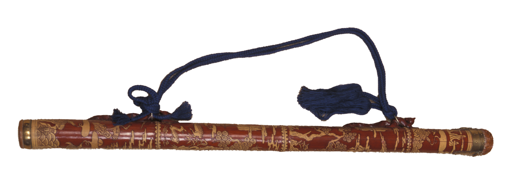

전통장
전통(箭筒)은 화살을 담아서 가지고 다니던 화살통으로, 화살통을 만드는 기술

제작과정
왕대나무의 밑동부터 위로 90~97cm 정도로 자른 대나무는 빗물이 스며들지 않는 그늘진 곳에 2년 이상 저장했다가 묽은 양잿물에 3일 정도 담가서 기름(진)을 뺀다. 그 후 몸통 속에 막혀있는 마디를 제거하고 껍질에 문양조각과 칠을 하여 완성한다.
사용재료
주로 2년 이상 된 맑은 녹색의 왕대나무를 사용한다.
특징
전통은 재료에 따라 여러 종류가 있다. 대나무로 만든 죽전통, 종이로 만든 지전통, 오동나무로 만든 목전통, 상어가죽으로 만든 교피전통 등이 있으며 때로는 조각이나 나전을 이용해 그 꾸밈새를 화려하게 만든 것도 있다.
전승자
| 보유구분 | 이름 | 성별 | 기예능 | 지역 | 인정일 |
|---|---|---|---|---|---|
| 보유자 | 김동학(金東鶴) | 남 | 전통장 | 경북 | 1989-06-20 |
소재지
경북